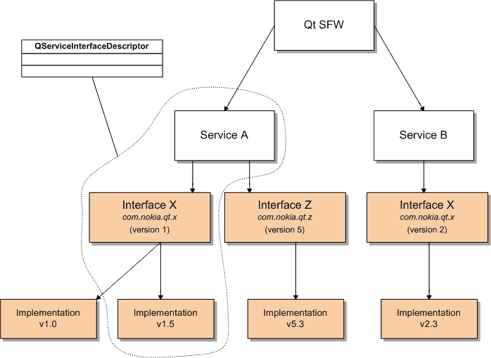

|
Home · All Classes · All Functions · | |
The QServiceInterfaceDescriptor class identifies a service implementation. More...
#include <QServiceInterfaceDescriptor>
| enum | Attribute { Capabilities, Location, ServiceDescription, InterfaceDescription } |
| QServiceInterfaceDescriptor () | |
| QServiceInterfaceDescriptor ( const QServiceInterfaceDescriptor & other ) | |
| ~QServiceInterfaceDescriptor () | |
| QVariant | attribute ( QServiceInterfaceDescriptor::Attribute which ) const |
| QString | customAttribute ( const QString & which ) const |
| QStringList | customAttributes () const |
| QString | interfaceName () const |
| bool | isValid () const |
| int | majorVersion () const |
| int | minorVersion () const |
| QService::Scope | scope () const |
| QString | serviceName () const |
| bool | operator!= ( const QServiceInterfaceDescriptor & other ) const |
| QServiceInterfaceDescriptor & | operator= ( const QServiceInterfaceDescriptor & other ) |
| bool | operator== ( const QServiceInterfaceDescriptor & other ) const |
| QDataStream & | operator<< ( QDataStream & out, const QServiceInterfaceDescriptor & dc ) |
| QDataStream & | operator>> ( QDataStream & in, QServiceInterfaceDescriptor & dc ) |
The QServiceInterfaceDescriptor class identifies a service implementation.
A service can implement multiple interfaces and each interface can have multiple implementations. The QServiceInterfaceDescriptor class enscapsulates this information, as illustrated by the diagram below.

The major version tag indicates the interface version and the minor version tag identifies the implementation version. Subsequent versions of the same interface must be binary compatible to previous versions of the same interface.
In the above example service A and B implement the interface com.nokia.qt.x. In fact Service A provides two different implementations for the very same interface. This is indicated by the changed minor version number. Although Service B is using the same interface it's implementation actually utilizes the second version of the interface com.nokia.qt.x. Binary compatibility guarantees that clients who know version 1 can utilize version 2. If an existing interface has to be changed in a non-compatible way a new interface (name) is required.
A QServiceInterfaceDescriptor (the quadruble of service name, interface name, interface version and implementation version) uniquely identifies a service implementation on a device. Interface names follow the java namespace convention.
The namespace com.nokia.qt.* is reserved for future Qt development.
See also QServiceFilter and QServiceManager.
This enum describes the possible attribute types which can be attached to a QServiceInterfaceDescriptor.
| Constant | Value | Description |
|---|---|---|
| QServiceInterfaceDescriptor::Capabilities | 0 | The capabilities attribute is a QStringList and describes the capabilities that a service client would require to use the service if capability checks are enforced. |
| QServiceInterfaceDescriptor::Location | 1 | This attribute points to the location where the plug-in providing this service is stored. If the service is plug-in based the location is the name and/or path of the plugin. |
| QServiceInterfaceDescriptor::ServiceDescription | 2 | This attribute provides a general description for the service. |
| QServiceInterfaceDescriptor::InterfaceDescription | 3 | This attribute provides a description for the interface implementation. |
Creates a new QServiceInterfaceDescriptor.
Creates a copy of QServiceInterfaceDescriptor contained in other.
Destroys the QServiceInterfaceDescriptor object.
Returns the value for the attribute which; otherwise returns an invalid QVariant.
Returns the value for the custom attribute which; otherwise returns a null string.
Returns a list of custom attributes attached to the service.
Returns the name of the interface that is implemented.
Returns true if this descriptor is valid; otherwise returns false.
Returns the version of the interface.
Subsequent versions of an interface are binary compatible to previous versions of the same interface. If an interface is broken it must use a new interface name.
Returns the version of the implementation.
Returns true if this implementation is provided for all users on the system.
See also QService::Scope.
Returns the name of service that provides this implementation.
Compares a QServiceInterfaceDescriptor to other. Returns true if they are not equal and false otherwise.
Copies the content of the QServiceInterfaceDescriptor object contained in other into this one.
Compares a QServiceInterfaceDescriptor to other. Returns true if they are equal and false otherwise.
Writes service interface descriptor dc to the stream out and returns a reference to the stream.
Reads a service interface descriptor into dc from the stream in and returns a reference to the stream.
| Copyright © 2009 Nokia Corporation and/or its subsidiary(-ies) | Trademarks | Qt Mobility Project 1.0.0 |